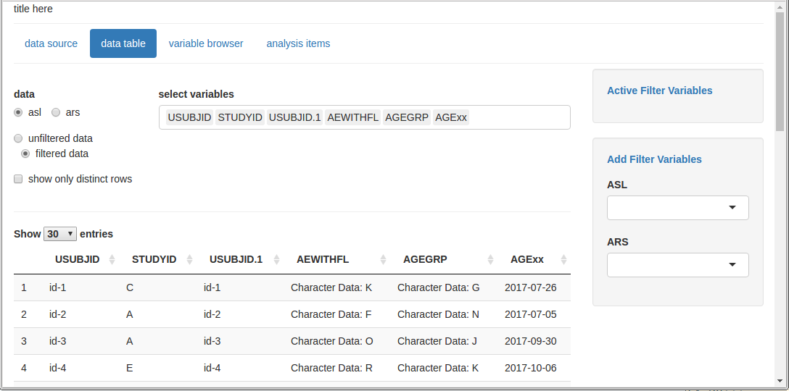
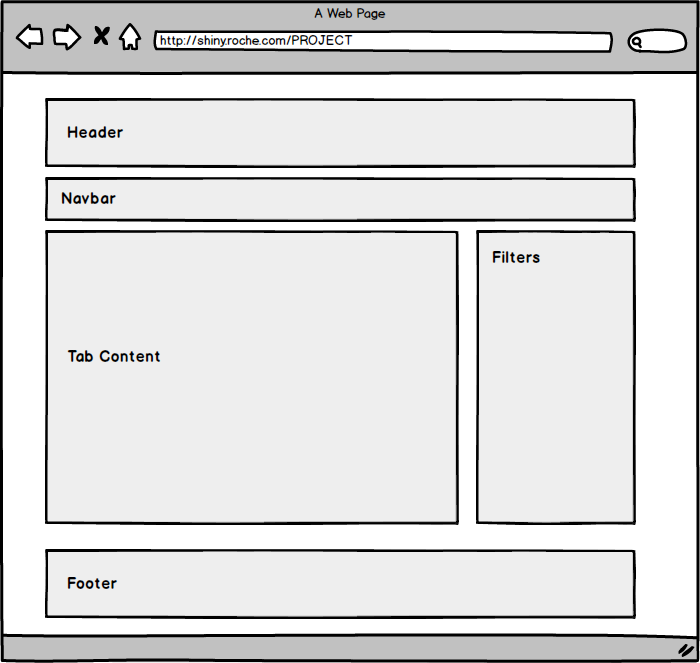

Getting Started with Teal
Adrian Waddell
2018-01-19

Introduction
teal is a shiny based interactive exploration framework for analyzing clinical trials data. teal currently provides a dynamic filtering facility and different data viewers. teal shiny applications are built using standard shiny modules.
The introduction example in this document is very basic, you can study the code for an actial application that we deployed to analyze ATEZO data. You can find that application code here.
Initializing A Teal application
The workflow to create a shiny app using teal is as follows. The teal::init function is used to create a shiny server and ui function which in turn can then be passed to the shiny::shinyApp function to start a shiny application. The following code is sufficient for a single file shiny app.
library(teal)
ASL <- generate_sample_data('ASL')
ARS <- generate_sample_data('ARS')
ATE <- generate_sample_data('ATE')
x <- teal::init(
data = list(ASL = ASL, ARS = ARS, ATE = ATE),
modules = root_modules(
module(
"data source",
server = function(input, output, session, datasets) {},
ui = function(id) div(p("information about data source")),
filters = NULL
),
tm_data_table(),
tm_variable_browser(),
modules(
label = "analysis items",
tm_table(
label = "demographic table",
dataname = "ASL",
xvar = "SEX",
yvar = "RACE",
yvar_choices = c("RACE", "AGEGR", "REGION")
),
tm_scatterplot(
label = "scatterplot",
dataname = "ASL",
xvar = "AGE",
yvar = "BBMI",
color_by = "_none_",
color_by_choices = c("_none_", "STUDYID")
),
module(
label = "survival curves",
server = function(input, output, session, datasets) {},
ui = function(id) div(p("Kaplan Meier Curve")),
filters = "ATE"
)
)
),
header = tags$h1("Sample App"),
footer = tags$p("Copyright 2017")
)
shinyApp(x$ui, x$server)This will produce the following webapp (I switched to the data table tab):

That is, we see a web app with a navigation bar at the top, the filter elements on the right, and the data table viewer in the center. The data table and the variable browser are two items that we provide with teal. Other items can be added using shiny modules. Note that if you would like to deploy the above app to a shiny server then place the code into an app.R file.
Note that each function in the teal package is documented. Run
library(teal)
help(package = "teal")In the remainder of this section we will discuss all the elements that we specified to get to this application.
General Layout
The following mackup shows an abstraction of the elements that are created in each teal application:

These containers correspond to actual html block elements and we use shiny’s default layout manager bootstrap 3 with a fluid-container. Web-app based on teal can control the following:
- analysis data
- header and footer content
- the navbar menu items that define the tab content
- and the content in the “Tab Content” element by using shiny modules
- whether the filter panel is shown or not and what filters are shown
And the following items can currently not be controlled:
- layout outside of the “Tab Contents” box
- filter setup
Data
In the code listing above we specified the analysis data with a named list that is passed to the data argument of teal::init. Because we filter every other data set with the ASL filters (more on this below) you always need to specify the ASL data with the USUBJID variable. Note that the dataset names are case sensitive.
Navigation Tabs, Application Content, Shiny Modules
The second argument of teal::init that we specified in the code listing above is the modules arguments. Modules define the elements displayed with tabs in the Navbar and their corresponding content in the Tabs Content box. A modules object can contain module and modules objects. For the app defined above this tree looks as follows:

Note that we currently only allow a tree of depth 2 and we start the tree with the root_modules function which is a wrapper around modules that sets the label argument to "root".
The shiny modules are specified in the module function with the server and ui argument. Both, module and modules are documented in the teal package, see ?module and ?modules.
Accessing the Analysis Data in Shiny Modules
teal encaplulates all analysis datasets and provides the filtering facility. The filtered and unfiltered data is then made accessible via a FilteredData object that we usually assign to a datasets variable. The FilteredData class is based on the R6 object system and we initally did not intend to expose that object to the teal package user. Hence there are some public methods to the FilteredData class that are not safe to use. It’s best to only use the get_data method when writing shiny modules. The get_data method returns either a reactive or a static version of the filtered or unfitered dataset of interest.
Assume we create the following module with the shiny modules
module(
label = "Frequency Table",
ui = function(id) {
ns <- NS(id)
tableOutput(ns("freq_table"))
},
server = function(input, output, session, datasets) {
output$freq_table <- renderTable({
asl <- datasets$get_data("asl", reactive = TRUE, filtered=TRUE)
table(asl$SEX)
})
}
)This analysis item shows up as Frequency Table in the navbar and displays a table of the ASL.SEX variable in the Tab Contents section of the app. The ui function requires the id argument, as defined in shiny modules and the server function requires the three arguments input, output, and session. The dataset argument is added to the server function call by teal based on the server_args argument list specified in the module function. The server_args expects a named list with additional arguments that should be passed to the server function. The list names (e.g. datasets in the above code) map to the argument names and the content is usually mapped one-to-one with the expection of some keywords such as tead_datasets which will be replaced by teal with the FilteredData object mentioned above. Note that when you extract a dataset from the FilteredData object (here associated with the datasets variable) then you should always use the argument filtered=TRUE in the get_data method to keep the application interaction coherent.
Filtering
Currently we apply a specific filtering mechanism that is useful for clinical trials data and that requires an ASL analysis dataset to be part of every teal app. That is, the filter framework provides lets the user dynamically specify which variables she/he wants to use for filtering (using ranges or categories). Teal then creates the subset code for each filter condition and links them with an elementwise logical AND operator (i.e. &). Further, all datasets other then ASL will also be filtered with the remaining subjects in ASL through the ASL.USUBJID and ASL.STUDYID variables. Hence, assume you have the following three filters
ASL.STUDYID %in% c('BP29392', 'WP29945')ASL.AGE > 15 & ASL.AGE < 35ARS.ADY > 0 & ARS.ADY < 500
Then then FiteredData object will perform the following operations to obtain the filtered ARS object in one of your moduls:
ASL_FILTERED <- subset(ASL, ASL.STUDYID %in% c('BP29392', 'WP29945') & ASL.AGE > 15 & ASL.AGE < 35)
ARS_FILTERED_ALONE <- subset(ARS, ARS.ADY > 0 & ARS.ADY < 500)
ARS_FILTERED <- merge(x = ASL_FILTERED,
y = ARS_FILTERED_ALONE,
by = c("USUBJID", "STUDYID"), all.x = FALSE, all.y = FALSE)Additional Information
Production Setup and Version Control
Teal is currently under active development and features and bug-fixes get added frequently and we also reserve the freedom to change the API. You can download the latest teal versions from the GithHub repository and eventually we will release versions also on the GRAN server that you can install via devtools::install_version.
I recommend not to version control your whole shiny app with packrat if not necessary. In order to version control teal for your deployed shiny app you can install the teal version of choice into folder within the shiny app and then load that teal package explicitly. To do so we
ssh bee.roche.com
module load R-library/2017Q1-gompi-2017a-R-3.3.1
R In R install these packages if you havent already
install.packages(c('roxygen2', 'whiksers', 'devtools'), dependencies = TRUE)Then exit R with q() and back on the bash clone the teal repository, build it and install it locally
cd ~/
git clone https://github.roche.com/waddella/teal
R CMD BUILD teal
cd /srv/shiny-server/MY-APP
mkdir libs
R CMD INSTALL -l ./libs ~/teal_0.0.1.tar.gzAnd then in your app.R file in the /srv/shiny-server/MY-APP folder add the following code
.libPaths(c(normalizePath("./libs"), .libPaths()))before you load the teal library with library(teal).
You may also watch the video here that explains these steps to set up a teal project.